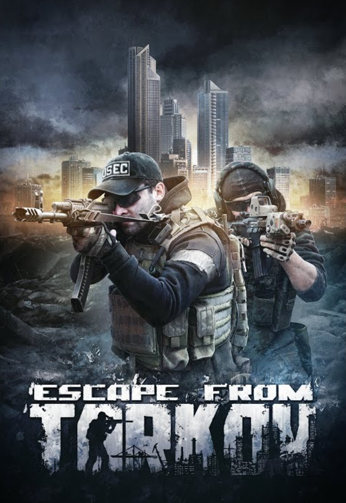
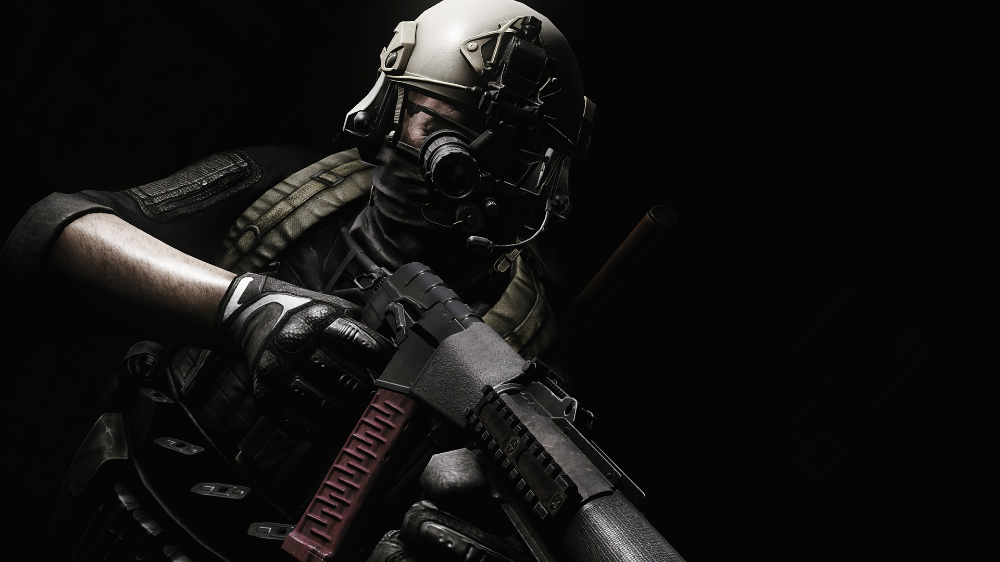

Mi is az az Escape from Tarkov
Az Escape from Tarkov egy nehéz játékmódú, sztorialapú MMO, ami FPS/TPS(első/harmadik nézetből játszódó akciójáték) elemeket RPG (szerepjáték) szerepekkel keresztezi. A játékot a Battlestate Games fejleszti, ami egy orosz játékstudió Szentpétervári székhellyel. Az Escape from Tarkov eseményei egy alternatív univerzumban, a jelen kor környékén játszódik, egy képzeletbeli orosz városban és külvárosaiban, ami az északi ipari és gazdasági központja az országnak. A játék hátterét pontosabban kifejtve Oroszországban és 2028-ra tehetjük be. Tarkov városában két zsoldoscég harcosai vívnak harcot, amit a Terra Group nemzetközi vállalat illegális tevékenységei váltottak ki. Imseretlen okokból a szituáció irányíthatatlanná vált, és a lakosságot evakuálták. Az egyedüli hátramaradottak a zsoldosok, a helyi fosztogatók, és ismeretlen háttérrel és szövetségesekkel rendelkező karakterek.
Mennyire lesz realisztikus a játék?
A fejlesztői csapat imádja a kemény és realisztikus játékokat minden szempontból (egészség, harci, leltár rendezés, karakter együttműködés, grafika, hangok, stb.) A játékos karakterét több veszély is fenyegeti, például sebesülések, fertőzések, dehidratáció, éhezés, és még sok más. Ezen kívül hatással van rá a hipotermia, sokkhatás, elkábulás. A játékosnak megfelelő kezelést kell alkalmaznia a megfelelő időben, manuálisan kell újratöltenie a fegyverét, és azt óvatosan használnia, hogy ne akadjon el... A lista itt nem ér véget.A lövések fizikája, valamint a fegyverek személyre szabhatósága egy olyan dolog, amire nagyon büszkék lehetünk. A fegyver nagyon realisztikusan fog viselkedni a harcban. Lesz hátrarúgása, el fog akadni, a lőszer nem fog néha elsülni, és a lövedékeknek realisztikus ballisztikai modelljük lesz, röppályát fognak változtatni, miután akadályba ütköztek, valamint töredeznek, és gellert kapnak. A lövedéket meghajtó gázok is megjelennek a csőszájféknél, csak úgy mint a valós életben.